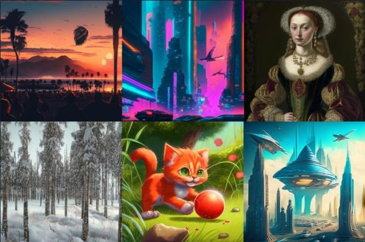

Fusion Brain
Fusion Brain AI - новый инструмент для создания потрясающих изображений на основе искусственного интеллекта. В отличие от Midjourney, которая совсем недавно стала платной и других подобных сервисов, Fusion Brain AI доступен бесплатно и вам даже не нужно регистрировать учетную запись. Стоит отметить, что Fusion Brain AI прекрасно понимает русский язык и имеет интерфейс полностью на русском языке. Этот инструмент позволяет создавать качественные изображения из простой текстовой подсказки, а также изменять существующие изображения, используя разные стили.
Вот несколько примеров описаний и полученные к ним изображения:

- Другие статьи